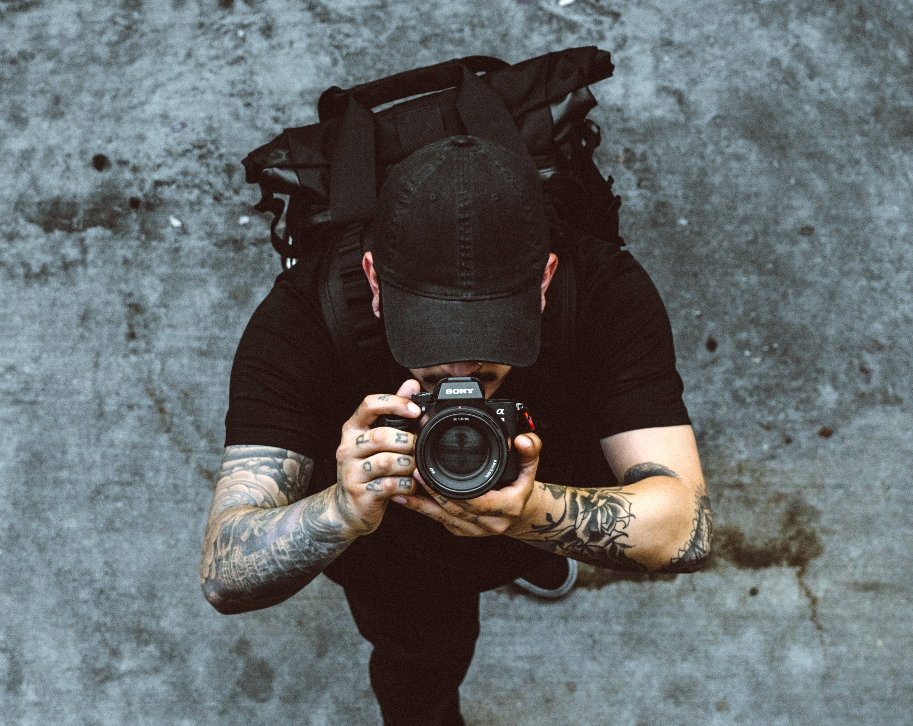
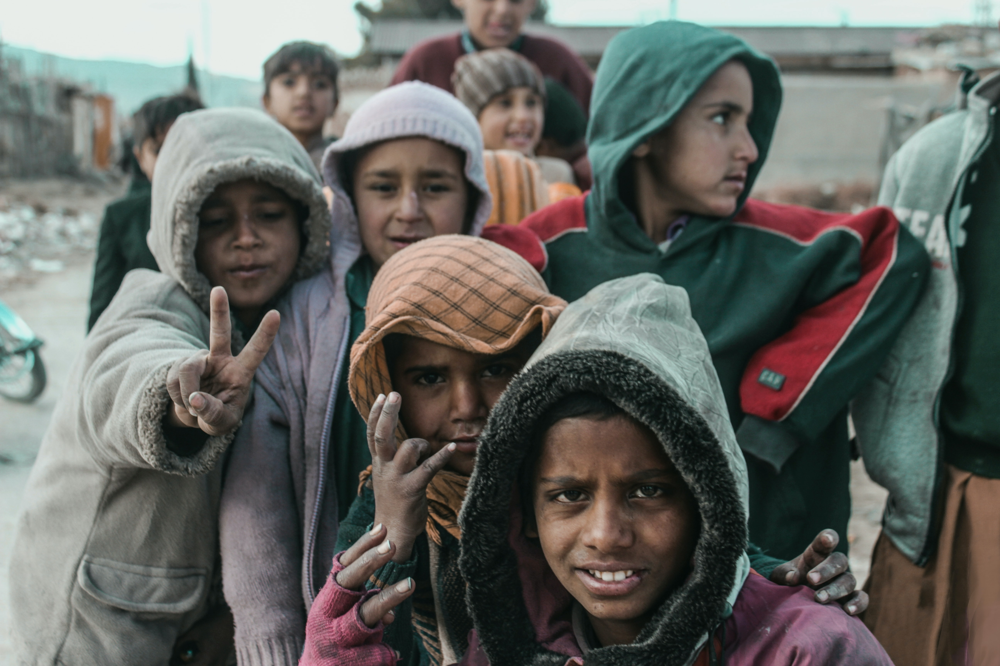
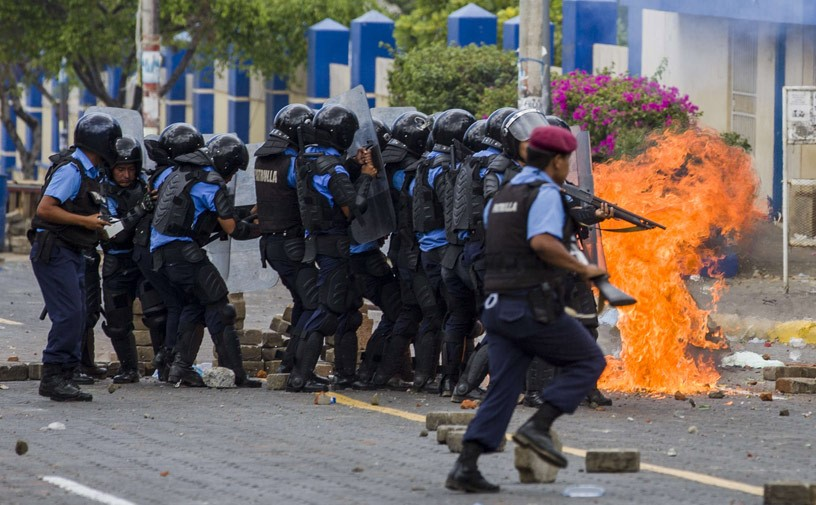

Camera Rex
¿Quién somos? - Introducción - Estilos - Tipos - Partes - Cámaras - Conclusión
¿Quién somos?
Somos un portal web que otorga contenido gratuito sobre la fotografía, desde sus comienzos, la importancia que tiene para el mundo, los tipos de fotografía y tipos de cámara, hasta cómo funciona en la actualidad.
Fotografía
La fotografía ha servido desde sus comienzos como una fuente de memoria para traer al presente objetos y momentos del pasado, esto implica que no existe una sola visión o una sola realidad, sino que podemos conocer la diversidad de experiencias de instantes, de nuevas formas de organización, de distintas formas de selección de la realidad y su representación, dentro de todos los aspectos posibles de la vida.
La importancia de la fotografía consiste en el intercambio y el reconocimiento que la participación y el entendimiento generan dentro de las relaciones que establecemos para generar formas de ver, leer y comprender el mundo que nos rodea.
''Tomar fotografías es tener interés en las cosas tal como están, en un status que inmutables, ser cómplice de cualquier cosa que se vuelva algo interesante, incluyendo al dolor o el infortunio de alguien en ese algo." (Sontag, 1996, p,22).
Estilos Fotográficos
 Fotografía de artística
Fotografía de artística
Representa un momento histórico social del desarrollo del ser humano, incurriendo una relación con significado político y social en la sociedad.
Fotografía publicitaria
Tiene como principal objetivo promocionar y vender productos o servicios. Para eso es necesario tener habilidades de comunicación para tratar con los clientes y entender y lograr el enfoque y objetivos deseados.
Fotografía de retrato
El principal objetivo es establecer una conexión con el protagonista de la fotografía, con el fin de captar su esencia con una captura que transmite emotividad y profundidad.
Fotografía documental
Se basa en mostrar la realidad a través de los ojos del fotógrafo, con el fin de contar una historia contextualizada.
Fotografía abstracta
Se enfoca en la forma, el color, el patrón y la textura. En la fotografía abstracta no existen reglas, pues se trata de un disparo simple que pretende capturar diferentes elementos dentro de la composición y que refleja muchísima creatividad.
Fotoperiodismo
Es un tipo de fotografía cuya narrativa emplea las técnicas del storytelling. Mientras el periodista utiliza la tinta y el papel para contar historias, un fotoperiodista usará su cámara para capturar la representación visual de su historia y transmitir emociones con ella.
Tipos de Fotografías
Fotografía arquitectónica
Retrata la estética de los diseños de edificios y estructuras. Existen diferentes variables en este tipo de fotografía: pueden ser edificios altos, bungalows, patrimonios, edificios modernos, graneros en granjas, puentes, bodegas o fábricas.
Fotografía Aérea
Se basa en realizar diferentes tipos de capturas a una gran altura, generando imágenes increíbles de diversos lugares.
Fotografía Urbana
Además de ser una representación visual de una idea o una captura de un momento decisivo, es también un comentario de la vida contemporánea en un espacio ecológico.
Partes de la Cámara
Toda exposición fotográfica posee una abertura en su parte frontal y en su parte posterior, el material que va a ser en este caso, impresionado por la luz. Al mismo tiempo, cuentan con distintas partes, entre ellas:
Cuerpo de la cámara
Estuche cerrado a la luz que constituye el cuerpo de la misma.
Película
Material fotosensible que experimenta una alteración química cuando es iluminado, esta modificación es la que guarda la información visual del objeto en cada fotografía.
Diafragma
Dispositivo a base de laminillas móviles intercaladas, que se cierran un poco para dejar paso a la luz para que la película se pueda imprimir.
Obturador
Regula el tiempo que actúa la luz sobre la película sensible, contando con dos tipos:
- Central: Está situado en el propio objetivo.
- De plano focal: Está colocado ante la película, como parte de la propia cámara y no del objetivo.
Objetivo
Reproduce, sobre la película, el motivo. Puede acoplarse a las cámaras. Cuenta con varios tipos, los cuales se diferencian por su distancia focal:
• 50 mm: Reproducen la imagen en sus proporciones reales. Son los más comunes.
• Foco largo: Tienen una distancia focal más larga que los objetivos corrientes y permiten " aproximar " los objetos lejanos.
• Gran angular: Posee una distancia focal menor que los usuales e incluye una mayor superficie del objeto, la gran mayoría de las veces con cierta deformación en sus extremos.
• Ojo de pez: Objetivo de gran angular de mínima distancia focal que deforma la imagen de forma exagerada, como consecuencia las líneas rectas se presentan curvadas y se estrechan los detalles de los bordes.
• Control de perspectiva: Corrigen la convergencia de líneas paralelas -distorsión común al resto de los objetivos- y se emplean sobre todo en la fotografía arquitectónica.
• Zoom: Originalmente fueron usados en las cámaras cinematográficas. Pueden acercar o alejar la imagen que se desea fotografiar.
• Objetivo macro: Cuando se retratan objetos a muy corta distancia, se tiene la posibilidad de corregir las aberraciones ópticas.
Teleobjetivos
Es necesario incrementar la amplificación (distancia focal) y la apertura del sistema cuando se procura fotografiar imágenes de objetos lejanos para que capte la máxima energía posible.
Flash
Su función es iluminar objetos sin luz, o con luz insuficiente.
Tipos de Cámaras
Cámara Tecnica
Por lo general son más grandes y pesadas que las medianas y pequeñas, y se suelen usar para trabajos de estudio, paisajes y fotografía de obras arquitectónicas.
Cámara de Visor Directo
Tienen un visor a través del cual el aficionado ve y encuadra la escena o el objeto. El visor no muestra la escena a través del objetivo, pero se aproxima bastante a lo que se retratará.
Cámara reflex
Incluye espejos que reflejan en el visor la escena que va a ser fotografiada. La imagen que toma el objetivo superior o visor se muestra en la pantalla de enfoque gracias a un espejo colocado a un ángulo de 45º.
Cámara Compacta
Son las más extendidas por su facilidad de manejo. Son pequeñas y por tanto el tamaño de su sensor también lo es. Es su principal desventaja. Son ideales para viajar o llevar a cualquier sitio porque caben en un bolsillo.
Conclusión
La fotografía ha ido evolucionando con el paso del tiempo, también la cámara también se ha ido desarrollando. Podría decirse que la composición es uno de los métodos donde el fotógrafo expresa su mayor creatividad porque él mismo selecciona los elementos y los va ordenando de acuerdo con el mensaje que quiera expresar.